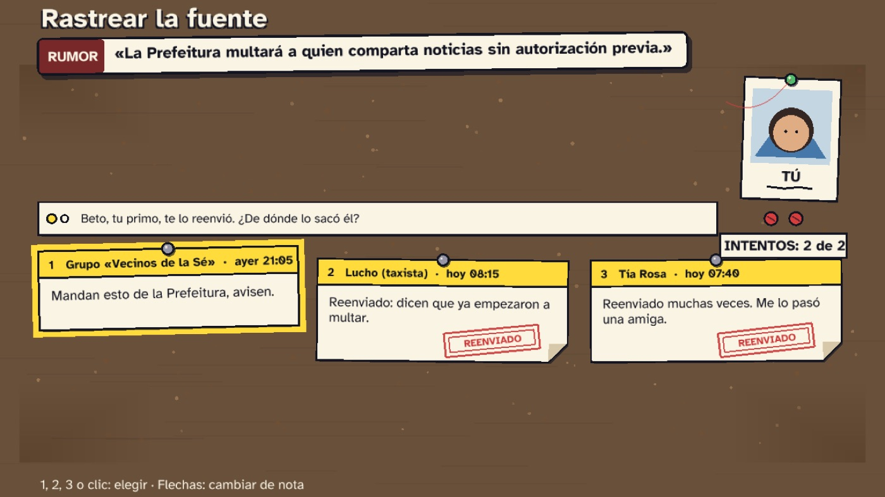

Rastrear la fuente
En cada salto aparecen tres mensajes: quién lo mandó, a qué hora y qué dice. Elige el más antiguo que no diga «reenviado» hasta llegar a quien lo publicó primero.
Lo que practicas en redes«Reenviado muchas veces» o «me lo pasó una amiga» no es una fuente. Antes de compartir, busca la cuenta o el documento original.